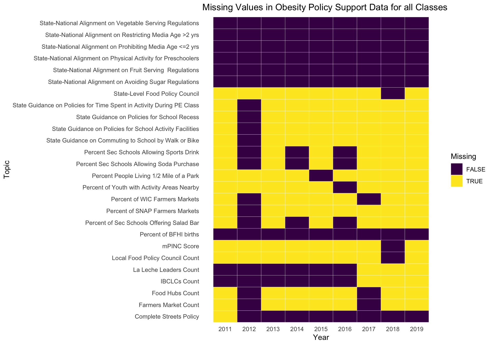

Chapter 4 Missing values
4.1 Dataset 1 Obesity-Behavioral
This dataset contained two broad categories of missing values - some for which the rows were completely missing from the data, and others which had supplementary text in particular columns explaining that there was missing data for the given row.

In above plot, we observed two patterns of missing data.
One is where due to “insufficient sample size” (mentioned in the Data_Value_Footnote column) for a given state and Question, some data values are missing.
We also noted that within the “Income” StratificationCategory1 group, in the “Stratification1” and “Income” columns, a subcategory called “Data not reported” constituted a small proportion of the entire dataset. In our further analysis, we treat this strata as just another subcategory within “Income”.
Apart from these obvious missing patterns, this dataset also has completely missing rows of data across different years. Since these rows are not a part of the dataset explicitly, the above plot failed to capture them. We added rows for these missing values and indicated the Data_Value as missing, to enable us to visualise patterns of these missing values. This is shown in below plot.
 Data for Nutrition Status i.e. Questions - “No Vegetable Consumption” and “No Fruit Consumption” is missing from 2011-2015 and 2016.
Data for Nutrition Status i.e. Questions - “No Vegetable Consumption” and “No Fruit Consumption” is missing from 2011-2015 and 2016.
Data for four of the Physicial Activity Status Questions is also missing for alternate years starting from 2012 to 2018.
Note that above heatmap only captures the missing entries that we explicitly added back - and not the NA values that the previous plot displayed.
4.2 Dataset 2 Obesity-Policy-Support
 For the Obesity-Policy-Support Dataset, we did a similar analysis. There are no NA values in this dataset.
To capture the missing entries over the years, we employed the same technique, as used for the Obesity-Behavioural dataset to generate this heatmap of missing entries.
No distinct patterns can be found. However, overall, this dataset seems much more sparse than the Obesity-Behavioural dataset.
As compared to 2019, 2018 has lesser number of missing values. Hence, in all our analysis at the state-level for the policy related questions, we used data from 2018 (instead of 2019 which we used from Behavioral Obesity Dataset1) as recent data.